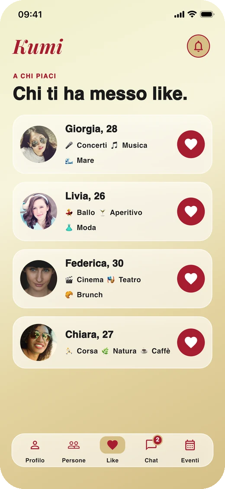
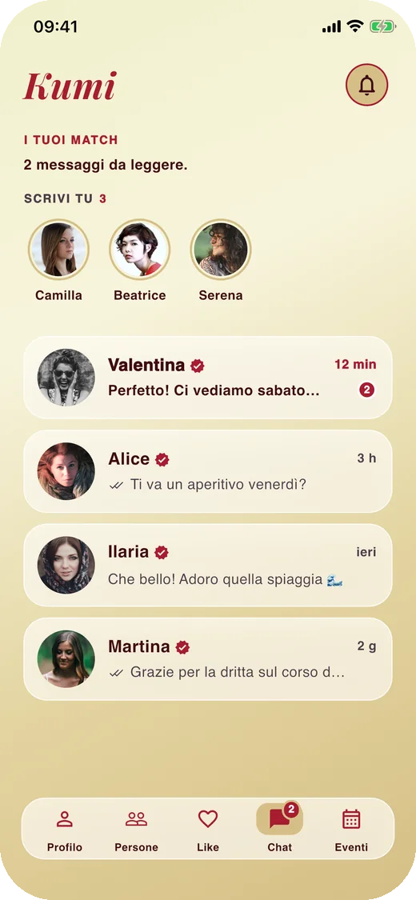

Dalla chat
alla vita reale.
Conosci ragazze davvero affini a te, non a caso. Scrivetevi, organizzatevi e vedetevi agli eventi della tua città.
Kumi è in arrivo. Intanto, se vuoi dirci qualcosa: kumiapp.space@gmail.com

Niente sconosciuti, niente rumore. Solo ragazze come te.
Kumi è uno spazio pensato per le donne che vogliono nuove amicizie, uscite e occasioni per stare bene insieme.
Affinità vera, non a caso
Ti mostriamo profili con cui hai davvero qualcosa in comune: interessi, passioni e le "sfumature" del tuo modo di essere — casa o avventura, caffè o spritz, mattiniera o nottambula. Ogni profilo ha una percentuale di affinità, così parti già dalle persone giuste.

Una chat che serve a vedersi
Quando il like è reciproco si apre la chat. Scrivetevi, decidete dove e quando. Kumi è fatta per uscire, non per restare a scrivere.

Eventi nella tua città
Un aperitivo, una lezione di yoga, una mostra: crea un evento o partecipa a quelli vicino a te, con una chat di gruppo per organizzarvi e un promemoria prima che inizi.

Il tuo profilo, come sei tu
Foto, interessi, lingue, le tue sfumature. E la spunta "verificata", che dice alle altre che dietro il profilo ci sei davvero tu.

Tre passi, e sei fuori con qualcuna di nuovo.
Crea il tuo profilo
Qualche foto, i tuoi interessi e le tue sfumature. Bastano due minuti.
Scopri persone affini
Scorri i profili della tua città ordinati per affinità. Se piacete a vicenda, si apre la chat.
Vedetevi dal vivo
Proponi un evento o partecipa a uno già in programma. Il resto succede fuori dall'app.
La tua tranquillità viene prima di tutto.
-
Profili verificati da una persona veraLa spunta la assegna il team di Kumi, non un algoritmo.
-
Blocca e segnala in un toccoChi blocchi sparisce davvero, da entrambe le parti. Chi viene segnalata più volte viene sospesa.
-
I tuoi dati restano tuoiCognome e data di nascita non li vede nessuna. Puoi eliminare l'account, e tutto quello che c'è dentro, quando vuoi.
-
Non è un'app di incontriKumi è per le amicizie e per fare cose insieme. Niente altro.
Kumi arriva presto.
Su App Store e Google Play. Nel frattempo, scrivici: ci fa piacere.